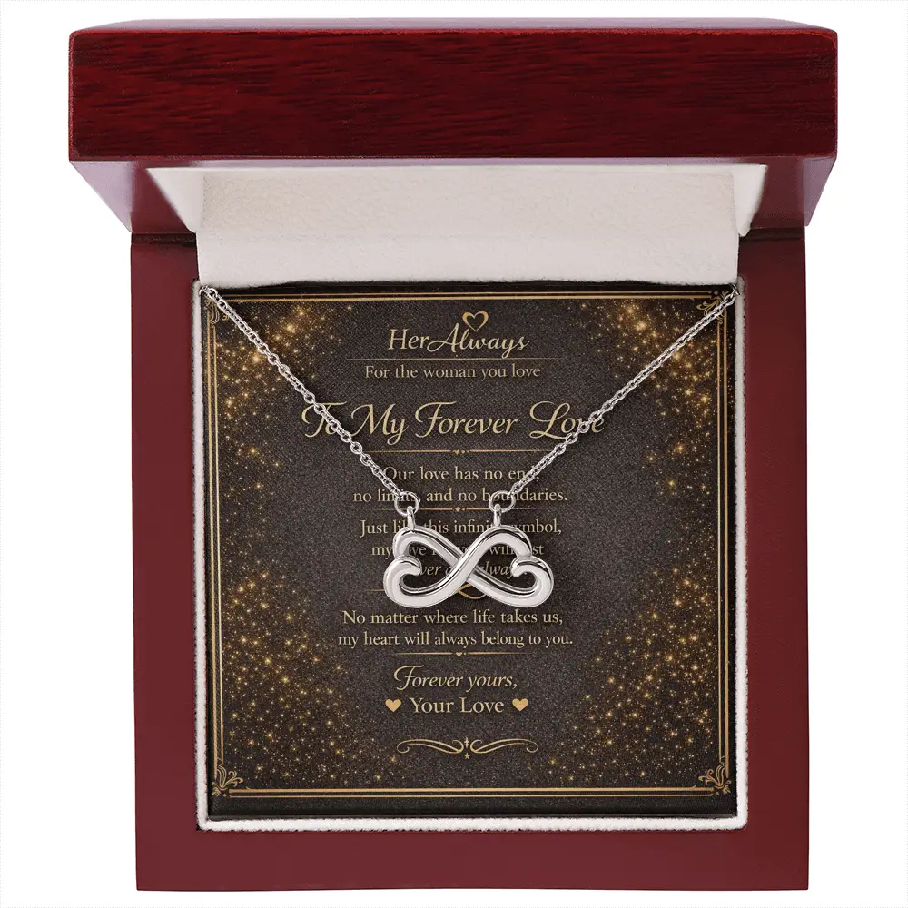

Home › Jewelry Gift Guides › Infinity Necklace Meaning
The infinity necklace meaning is rooted in one simple idea: a love, bond, or connection that has no beginning and no end. In short, an infinity necklace symbolizes eternal love, lasting friendship, and a sense of limitless possibility. The sideways figure-eight symbol has been used for centuries to represent things that go on forever, and in modern jewelry it has become a timeless way to express lasting love.
Because it's worn close to the heart, an infinity symbol necklace often carries more meaning than its simple design suggests. It's a quiet, everyday reminder of a connection that isn't going anywhere.
If you want to compare it with other romantic symbols, you can also read our full guide on necklace symbols and their meanings in love.
Last updated: October 7, 2026 · Written by Elena Marsh, gift guide editor at HerAlways
Infinity Necklace Meaning (Quick Guide)
Jump to: What It Symbolizes | Origin of the Symbol | Heart, Double & Cross Styles | Who to Gift It To | Symbol Comparison | FAQ
- Core meaning → Endless, eternal love
- Best for → Anniversaries, long-distance love, everyday wear
- Also represents → Enduring friendship, personal strength, and spiritual connection
- Infinity heart → Love that never ends
- Double infinity → Two lives joined for good
- Compares to → A lighter, simpler symbol than the love knot
What Does an Infinity Necklace Symbolize?

Best for: Anniversaries, long-distance relationships, and everyday romantic wear
At its core, the infinity symbol meaning in love comes from its shape. A figure-eight drawn on its side has no visible starting point and no end, which makes it a natural symbol for something that lasts forever.
Depending on who's wearing it or giving it, an infinity necklace can take on a few different meanings:
- Eternal love → Given between romantic partners to represent a love that doesn't fade over time
- Enduring friendship → Gifted to a close friend as a reminder that the bond will last through distance and change
- Personal strength → Worn as a self-gift to represent resilience and limitless potential
- Spiritual connection → For some wearers, the endless loop reflects a connection to something larger, such as faith, the universe, or the cycle of life
Because the meaning is flexible, the infinity necklace works as both a deeply romantic gift and a simple, everyday piece of jewelry.
Where Does the Infinity Symbol Come From?
The word "infinity" comes from the Latin infinitas, meaning "unboundedness," which in turn traces back to the Greek idea of apeiron, something without limit. The sideways figure-eight we use today is much younger: the English mathematician John Wallis introduced the ∞ sign in 1655 to stand for a quantity larger than any number you could name.
So the infinity symbol began as mathematics, not romance. It crossed into jewelry because its shape explains itself. Trace the loop with your finger and you never reach an end, which is exactly the feeling people want to give someone they love. Older symbols such as the ouroboros, a snake eating its own tail, express a similar idea of endless cycles, but the clean, modern loop is the one that took over necklaces and bracelets.
Infinity Necklace Meaning in Relationships
In a relationship, the infinity necklace is one of the most recognizable ways to say "this isn't temporary." Unlike symbols tied to a specific milestone, infinity doesn't point to a moment — it points to continuation.
This is why an infinity necklace for girlfriend is such a popular choice for couples who want to express a love that keeps going, even through distance, busy schedules, or long stretches apart.
- Represents a relationship without a defined end point
- Symbolizes consistency and lasting commitment
- Works well as a gift for long-distance partners
It's also worth knowing what it does not say. An infinity necklace is not an engagement or a formal promise the way a ring can be. That's part of why it works so well at almost any stage: a new relationship, an anniversary, or a milestone birthday. It tells her you're in it for the long run without putting pressure on the moment.
Infinity Necklace Styles and What Each One Means
The basic infinity loop is the most common version, but jewelers combine it with other symbols, and each pairing adds its own message.
Infinity Heart Necklace Meaning
An infinity heart necklace merges the endless loop with a heart, so the message becomes very direct: love that never ends. If you've searched for the meaning of an infinity symbol with heart necklace, this is it. Where a plain infinity symbol can be read as friendship, strength, or love, the heart removes any doubt and makes it clearly romantic. This is the style to choose when you want her to know exactly what it means. Our Infinity Love Necklace uses a heart-shaped infinity pendant for this reason.
Double Infinity Necklace Meaning
A double infinity necklace links two infinity loops together. Because there are two of them, it's usually read as two people, or two lives, joined together for good. It sits close in feeling to our interlocking hearts necklace meaning and to the love knot, and it's a strong choice for couples who've been together a while.
Infinity Cross Necklace Meaning
When the infinity symbol is paired with a cross, it's usually read as faith that endures, or a love that carries a spiritual meaning. It's a common choice for people who want their jewelry to reflect belief as well as affection.
Who Should You Give an Infinity Necklace To?
Because its meaning is broader than some other symbols, an infinity necklace fits several kinds of relationships:
- A romantic partner — to represent eternal love and commitment
- A close friend — to symbolize a friendship that will last regardless of distance
- Yourself — as a reminder of personal strength and endless possibility
What does it mean when someone gives you an infinity necklace? In most cases, they're telling you that what you share is lasting. From a partner, it's a statement of long-term love. From a friend or family member, it means the bond matters to them and they expect it to last.
If you're specifically choosing a gift for a partner, you can also explore our romantic gift ideas for your girlfriend, see our list of the best necklace gifts for your girlfriend, or read about an anniversary necklace for your wife. If you're still unsure what a necklace says as a gift, read necklace gift meaning in a relationship.
Is It Okay to Wear an Infinity Necklace?
Yes. The infinity symbol carries no negative meaning and is widely considered appropriate for everyday wear. It's one of the most common symbols in modern jewelry, worn by people in relationships, among friends, and as a personal accessory with no romantic context at all.
Its simple, minimal design also means it pairs easily with other necklaces, making it a popular everyday layering piece as well as a meaningful gift.
Infinity vs Love Knot vs Heart vs Interlocking Hearts — What's the Difference?
| Symbol | Meaning | Best For |
|---|---|---|
| Infinity | Endless, continuous love | Anniversaries, long-distance love |
| Love Knot | Two lives tied together, deep commitment | Serious relationships |
| Heart | Romantic affection | Birthdays, Valentine's Day |
| Interlocking Hearts | Two hearts joined as one | Romantic partners, anniversaries |
Choose Infinity if: You want a simple, everyday symbol of a love that never ends
Choose Love Knot if: You want a deeper symbol of unbreakable commitment
Choose Heart if: You want the clearest, most universal symbol of love. Read our heart necklace meaning guide
Choose Interlocking Hearts if: You want to say "two hearts, one bond." Read the interlocking hearts necklace meaning
To read the full breakdown, visit our guide on the love knot necklace meaning.
A Symbol of Love That Never Ends
If you're looking for a necklace that represents a love with no end, the Infinity Love Necklace is one of the most meaningful and timeless choices. It comes with a personalized message card in a luxury gift box.
FAQ – Infinity Necklace Meaning
What does the infinity necklace symbolize?
An infinity necklace symbolizes endless love, unbreakable connection, and a bond with no beginning or end. It is commonly worn to represent romantic love, close friendship, or personal strength.
Is it okay to wear an infinity necklace?
Yes. The infinity necklace is a widely worn symbol with no negative meaning attached to it. It is considered appropriate for everyday wear and is a popular choice for romantic gifts, friendship jewelry, and self-gifting.
Who do you give an infinity necklace to?
An infinity necklace is often given to a romantic partner to represent lasting love, to a close friend to symbolize an enduring friendship, or bought as a personal gift to represent inner strength and possibility.
What is the difference between an infinity necklace and a love knot necklace?
An infinity necklace represents endless, continuous love, while a love knot necklace represents two lives tied together in an unbreakable bond. Both symbolize commitment, but the love knot is often seen as the deeper, more serious symbol.
What does an infinity heart necklace mean?
An infinity heart necklace combines the infinity loop with a heart, so it symbolizes love that never ends. It is one of the most romantic versions of the infinity symbol and a popular gift for a girlfriend or wife.
What does a double infinity necklace mean?
Two interlinked infinity symbols represent two people or two lives joined together for good. A double infinity necklace is usually read as a symbol of lasting commitment between a couple or close friends.
Who invented the infinity symbol?
The English mathematician John Wallis introduced the infinity sign in 1655 to represent a quantity without limit. Its use as a symbol of love in jewelry came much later.
Is an infinity necklace a good gift for a girlfriend?
Yes. It is romantic without being as formal as a ring, and its meaning of lasting love is understood at a glance, which makes it a safe and thoughtful choice for birthdays, anniversaries, and long-distance relationships.
Does an infinity necklace mean you are engaged or promised?
No. An infinity necklace is a symbol of lasting love, not an engagement or a formal promise. It can be given at any stage of a relationship, or as a gift between friends and family.
Final Thoughts
The infinity necklace meaning goes far beyond its simple design. It represents a love, friendship, or personal journey that never truly ends, making it one of the most versatile and meaningful necklace symbols you can gift. Whether you choose the classic loop, an infinity heart, or a double infinity, the message underneath stays the same: this is meant to last.
If you want to explore more symbolic necklace ideas, you can visit our complete guide on necklace symbols and meanings in love, or explore the moon necklace meaning and butterfly necklace meaning guides.